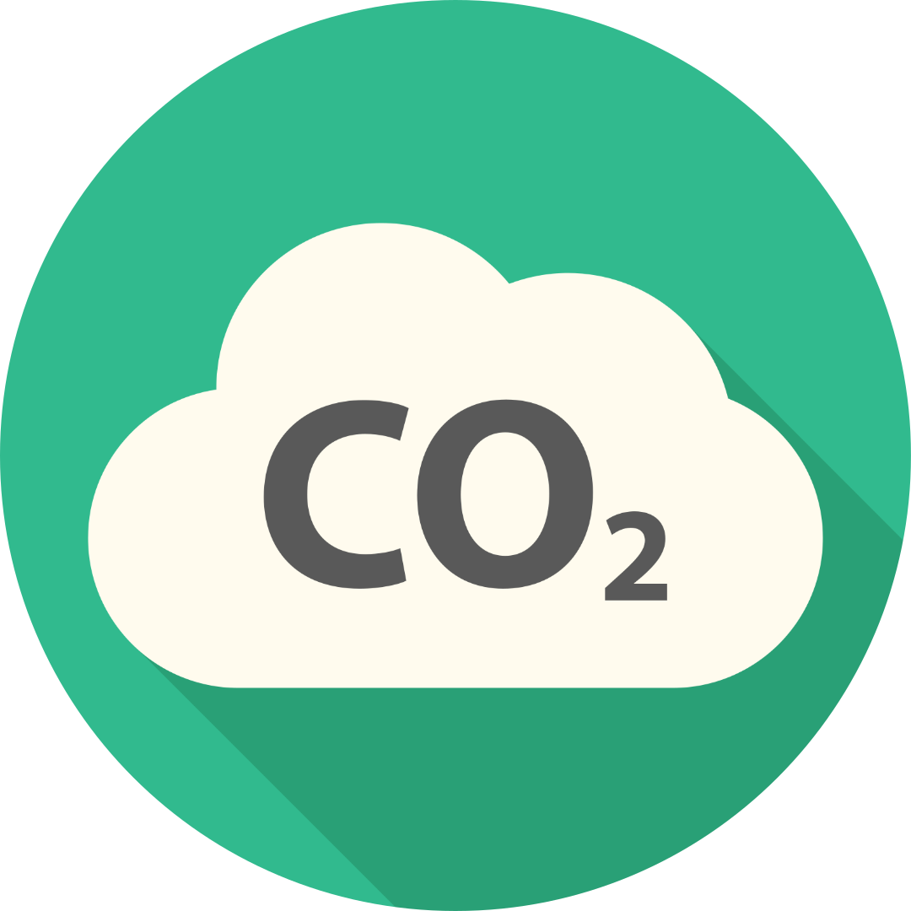
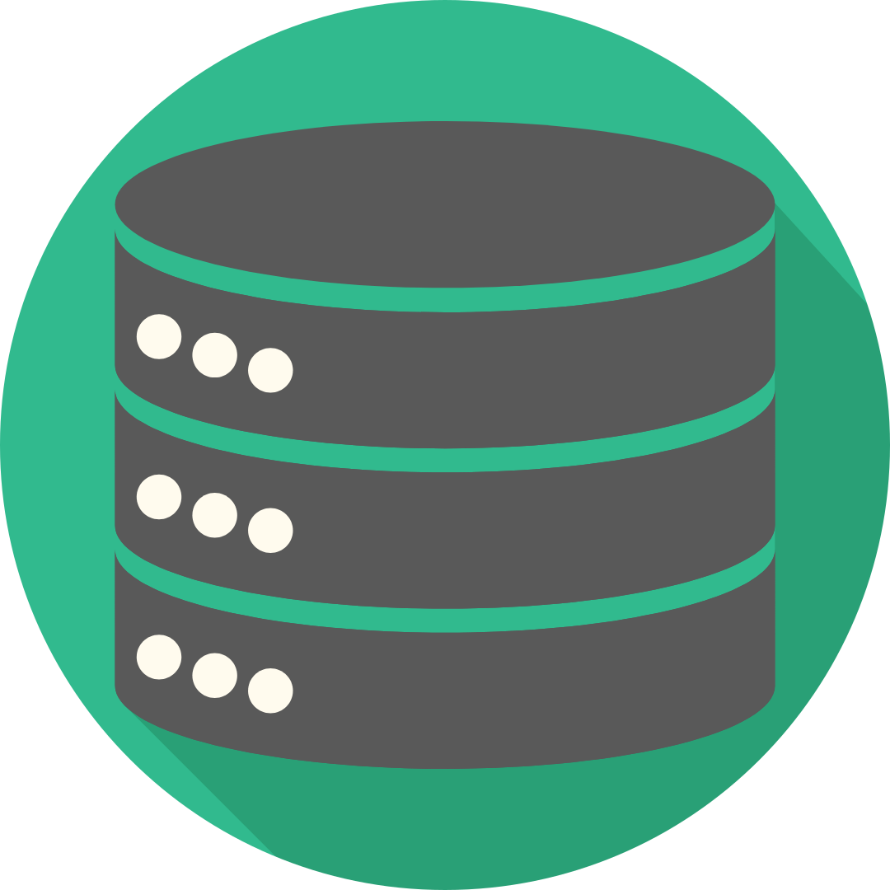
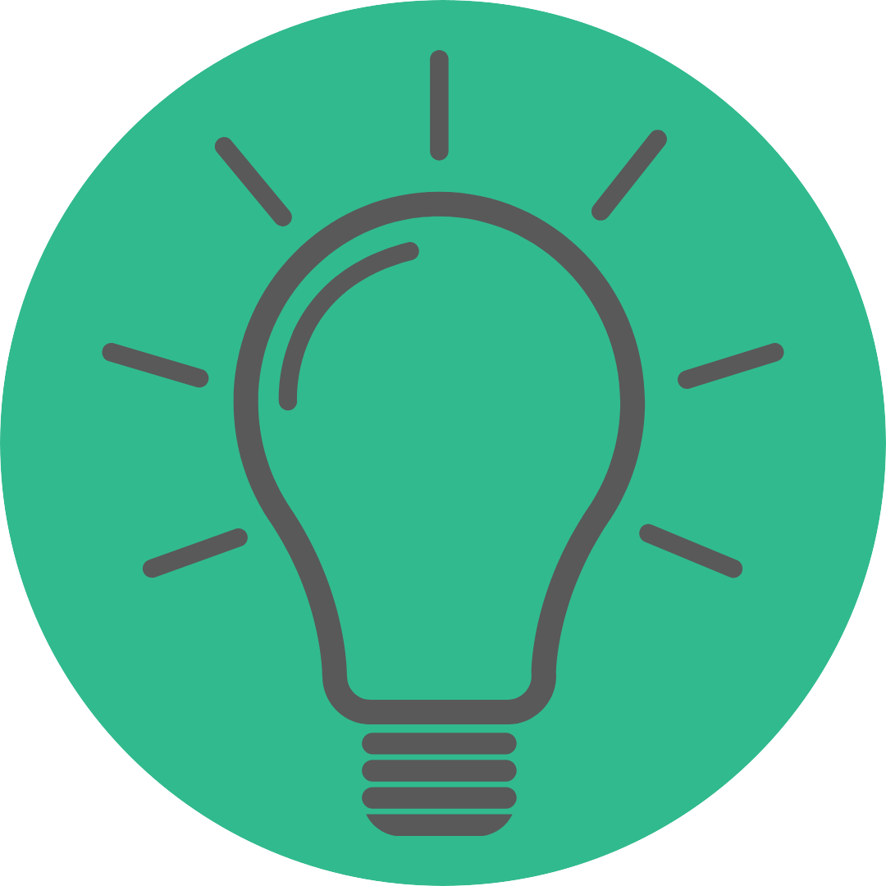

CAS Smart Service Engineering · Day 4Data-to-Service: Edge AI Hardware Setup
Slide 1 / 14
Was ist Servitization?
Warum setzen Hersteller auf Servitization?
Wirtschaftliche Perspektive

Ökologische Perspektive
Markt und Soziale Perspektive

Technologische Perspektive

Wissens Perspektive
Wie sieht Servitization in der Praxis aus?
TotalCare
Verkauf von Triebwerken→Verkauf von Flugstunden
→
Pay-per-Copy
Verkauf von Kopiermaschinen→Printing as a Service
→
Fleet Management
Verkauf von Werkzeug→Verkauf von Verfügbarkeit
→
Pay-per-Lux
Verkauf von Leuchtmitteln→Verkauf von Beleuchtung
→
Beispiel anklicken für den Deep Dive
Produktverkauf
Einmalverkauf + Wartung nach Aufwand. Die Airline kauft das Triebwerk und bezahlt Ersatzteile sowie Überholungen separat – der Hersteller verdient auch an Defekten.
→
Servicemodell
Fixpreis pro Triebwerks-Flugstunde. Rolls-Royce übernimmt Wartung, Teile und Ersatztriebwerke – und verdient nur, solange das Triebwerk fliegt.
Wer trägt welches Risiko?
Verkauf
Service
Eigentum
Airline
Airline
Wartung & Teile
Airline
Hersteller
Ungeplanter Ausfall
Airline
Hersteller
Daten als Enabler
Messung: Sensoren im Flug erfassen Temperatur, Druck, Drehzahl und Vibration (Engine Health Monitoring). Wirkung: Werkstattbesuche werden planbar und Schäden früh erkannt, bevor teure Ausfälle entstehen.
Genauer hingeschaut
Rolls-Royce verkauft weiterhin Triebwerke – oft mit geringer Marge, der Ertrag entsteht über die Servicejahre. Abgerechnet wird nicht die Flugstunde der Airline, sondern Wartung und Verfügbarkeit pro Flugstunde.
Diskussionsfrage
Welche Daten braucht Rolls-Royce, um einen Fixpreis pro Flugstunde kalkulieren zu können – ohne selbst draufzulegen?
Meilensteine
1962«Power by the Hour» für das Viper-Triebwerk (Business-Jet HS 125)
~1999TotalCare als Langzeit-Servicevertrag für die Trent-Familie
heuteGrossteil der Widebody-Triebwerke unter Langzeit-Serviceverträgen
Ausgangslage
Zu teuer für den Direktkauf. Der Xerox 914 – der erste automatische Normalpapier-Kopierer – hätte rund USD 29'500 gekostet; für die meisten Büros unbezahlbar.
→
Servicemodell
Miete + Gebühr pro Kopie. USD 95/Monat inkl. 2'000 Kopien, jede weitere Seite 4 Cent – Service und Wartung inklusive. Heute weiterentwickelt zu Managed Print Services.
Wer trägt welches Risiko?
Verkauf
Service
Investition & Eigentum
Kunde
Hersteller
Wartung & Service
Kunde
Hersteller
Auslastungsrisiko
Kunde
Hersteller
Daten als Enabler
Messung: 1959 genügte ein mechanischer Kopienzähler als erster «Sensor»; heute melden vernetzte Geräte Zählerstände, Tonerstand und Fehlercodes automatisch. Wirkung: Exakte Abrechnung pro Seite und automatischer Toner-Nachschub vor dem Ausfall.
Genauer hingeschaut
Pay-per-Copy war bei Xerox kein späterer Umbau weg vom Maschinenverkauf, sondern 1959 das Startmodell – weil die Hardware sonst kaum verkäuflich war. Servitization kann also von Tag 1 an der Weg in den Markt sein.
Diskussionsfrage
Viele Büros kopierten deutlich mehr als die inkludierten 2'000 Seiten – wer profitiert davon und was heisst das für die Preisgestaltung?
Meilensteine
1959Xerox 914 vorgestellt – Miete mit Gebühr pro Kopie
1961Haloid Xerox wird zur Xerox Corporation – der 914 macht die Firma gross
heuteManaged Print Services: Betrieb ganzer Druckerflotten, Abrechnung pro Seite
Produktverkauf
Hohe Investition + voller Verwaltungsaufwand. Bauunternehmen kaufen Bohrhämmer & Co. selbst und tragen Reparaturen, Diebstahl sowie die Verwaltung des Geräteparks.
→
Servicemodell
Fixe Monatsrate für garantierte Verfügbarkeit. Reparaturen, Ersatzgeräte, Diebstahlschutz und regelmässige Erneuerung sind inklusive; Hilti bleibt Eigentümer.
Wer trägt welches Risiko?
Verkauf
Service
Investition & Eigentum
Kunde
Hersteller
Reparatur & Ersatzgerät
Kunde
Hersteller
Diebstahl / Verlust
Kunde
Hersteller (mit Selbstbehalt)
Daten als Enabler
Messung: Flotteninventar erfasst Alter, Reparaturhistorie und Kosten pro Gerät; ON!Track (Tags, Bluetooth) zeigt den Standort auf der Baustelle. Wirkung: Bessere Preiskalkulation, weniger Suchzeiten und Feedback für die Produktentwicklung.
Genauer hingeschaut
Bezahlt wird nicht pro Nutzung (kein Pay-per-Use), sondern eine fixe Monatsrate für garantierte Einsatzbereitschaft – ein nutzungsorientiertes Product Lease mit Full Service.
Diskussionsfrage
Wie verhindert Hilti, dass geleaste Werkzeuge auf der Baustelle weniger sorgfältig behandelt werden als eigene?
Meilensteine
~2000Pilot mit Schweizer Bauunternehmen («Kümmert euch um unseren Gerätepark»)
2000erRollout in weitere Länder
heuteFleet Management international, ergänzt durch digitales Asset-Management (ON!Track)
Produktverkauf
Stückzahlgeschäft ohne Lebensdauer-Anreiz. Kunden kaufen Leuchten und Leuchtmittel und tragen Wartung sowie Entsorgung selbst – kürzere Lebensdauer bedeutet mehr Nachkauf.
→
Servicemodell
Bezahlt wird vereinbartes Licht statt Hardware. Der Hersteller plant, installiert, wartet und besitzt die Anlage und nimmt sie am Vertragsende zur Wiederverwendung zurück.
Wer trägt welches Risiko?
Verkauf
Service
Investition & Eigentum
Kunde
Hersteller
Wartung & Ausfälle
Kunde
Hersteller
Lebensende / Entsorgung
Kunde
Hersteller
Daten als Enabler
Messung: Vernetzte LED-Systeme mit Präsenz- und Tageslichtsensoren erfassen Auslastung, Lichtleistung und Ausfälle. Wirkung: Bedarfsgerechte Fernsteuerung, garantierte Lichtqualität und deutlich tieferer Stromverbrauch.
Genauer hingeschaut
«Pay-per-Lux» ist das Schlagwort für Light as a Service – früher wurden ganze Leuchten verkauft, nicht nur Leuchtmittel. Weil die Hardware beim Hersteller bleibt, entstehen direkte Anreize für langlebige, reparierbare Produkte (Kreislaufwirtschaft).
Diskussionsfrage
Warum hat der Hersteller im Light-as-a-Service-Modell plötzlich ein Interesse an möglichst langlebigen, sparsamen Leuchten – im Verkaufsmodell aber nicht?
Meilensteine
~2010Architekt Thomas Rau will fürs Büro «Licht statt Lampen» kaufen – Pay-per-Lux entsteht
2015Schiphol: Light as a Service mit Philips & Cofely (heute ENGIE) – rund 50 % weniger Strom, 75 % längere Lebensdauer der Leuchten
2018Philips Lighting heisst neu Signify
Fall
PSS-Typ (Tukker)
Kunde bezahlt für …
Eigentum bei
Daten-Enabler
Ergebnisorientiert Pro Einheit · Pay per Service Unit
Triebwerks-Flugstunde (Wartung & Verfügbarkeit)
Airline / Leasinggeber
Engine Health Monitoring
Ergebnisorientiert Pro Einheit · Pay per Service Unit
Ergebnisorientiert Ergebnisgarantie · Functional Result
Vereinbarte Lichtleistung
Philips / Signify
Vernetzte LED-Steuerung & Sensorik
Gemeinsames Muster: Der Hersteller übernimmt Verantwortung (oft auch das Eigentum) und wird für die Leistung bezahlt. Dafür muss er die Leistung messen können – vom Kopienzähler bis zum Sensor-Datenstrom in Echtzeit. Daten sind der Enabler für Servitization.
Servitization in der Schweiz: KMU & Industrie
KMU & Spezialhersteller (6)Industrie & MEM (6)
Standort auf der Karte anklicken für den Deep Dive
Ausgangslage · Elite SA (Aubonne, VD)
Hoher CAPEX & leere Betten in der Nebensaison. Hotels kaufen hochwertige handgefertigte Matratzen im Voraus, tragen das Auslastungsrisiko und entsorgen sie nach wenigen Jahren.
→
Servicemodell · «Smart Lease»
Pay-per-Night ab ~CHF 0.50 pro belegter Nacht. Druck- und Bewegungssensoren messen reale Übernachtungen; Ecoclean-Hygiene und End-of-Life-Recycling sind inklusive (Green Business Award).
Erlös, Finanzierung & Risiko
Risikoshift: Saisonale Auslastung und Restwert wechseln vom Hotel zum Hersteller; Eigentum bleibt bei Elite. Ökonomischer Effekt: Langlebigkeit zahlt sich direkt aus – je länger die Matratze hält, desto höher die Service-Marge über die Vertragslaufzeit.
Suter Gruppe (Lupfig, AG): Mobile Bauheizung & Entfeuchtung als Mietservice mit IoT-Fernüberwachung und 24h-Pikett.
Schaerer AG (Zuchwil, SO):Coffee Link IoT-Telemetrie für Flottenstatus, Wartung & exakte Pay-per-Cup-Abrechnung.
Genauer hingeschaut
Gerade kleinere Schweizer Hersteller verknüpfen Pay-per-Use mit Kreislaufwirtschaft: Wenn das Produkt in der eigenen Bilanz bleibt, entsteht das «Fish-Modell» (erst Investition, später laufender Rückfluss).
Diskussionsfrage
Wie überbrückt ein KMU das Cashflow-Tal, wenn Hotels erst pro Nacht zahlen statt beim Kauf der Matratze?
Ausgangslage · Laserschneidanlagen
Hohe CAPEX-Hürde & Fachkräftemangel. Vollautomatische Anlagen wie die TruLaser Center 7030 binden Millionenbeträge in der Kundenbilanz und erfordern hochqualifizierte Bediener.
→
Servicemodell · TRUMPF «Pay-per-Part» (Grüsch, GR)
Fixpreis ausschliesslich pro gut geschnittenem Blechteil. Die Anlage steht beim Kunden; Telemetrie, Wartung und ein Remote Control Center (u. a. in Grüsch) sichern den Betrieb.
Wer trägt welches Risiko?
Kauf
Pay-per-Part
Investition & Bilanz
Kunde
Finanzpartner / SPV
Auslastung & Stillstand
Kunde
Anbieter & Versicherer
Wartung & Remote-Betrieb
Kunde
TRUMPF
Finanzierung & Daten-Enabler (Off-Balance-Sheet)
Finanzarchitektur:Munich Re finanziert die Anlagen und trägt das Investitions- und Auslastungsrisiko ausserhalb der Kunden- und Herstellerbilanz. Daten-Enabler:relayr vernetzt Sensordaten, Betriebszeiten und Stückzahlen für die dynamische Risikobewertung.
Genauer hingeschaut
Schweizer Lohnfertiger (KMU) profitieren als Kunden doppelt: Sie erhalten modernste Automatisierung ohne Bilanzbelastung und gewinnen durch Remote-Steuerung Produktionskapazität trotz Fachkräftemangel.
Diskussionsfrage
Warum braucht ein Maschinenbauer für echtes Pay-per-Part meist einen Versicherer oder Finanzpartner statt nur eigene Ingenieure?
Zeitbasierte Wartung & teure Stillstände. Kolbenkompressoren laufen in kritischen Prozessen; reaktive Reparaturen verursachen hohe Ausfallkosten und Sicherheitsrisiken.
→
Servicemodell · «UP! Solutions» & Diagnostik
KI-gestützte Zustandsüberwachung & längere MTBO.UP! Insight liest SPS-Prozessdaten; UP! Detect nutzt Hochfrequenz-Vibration & neuronale Netze zur Früherkennung bis zu ~90 % der Anomalien.
Weitere Schweizer Daten-Services
Amberg Technologies (Regensdorf, ZH):OIS Vision scannt Tunnel bei bis zu 120 km/h; KI klassifiziert Risse/Feuchtigkeit in die Inspection Cloud (Digital Twin statt manuellem Begehungsprotokoll).
PB Swiss Tools (Wasen i.E., BE): Digitale Drehmomentwerkzeuge (DigiTorque) mit integrierter NFC-Schnittstelle für Kalibrierzyklen und revisionssicheres Asset-Tracking.
Wertschöpfung durch Daten
Domänenwissen + Sensorik: Langjährige OEM-Schadensdatenbanken (z. B. PROGNOST) machen aus rohen Vibrations- oder Bildströmen konkrete Handlungsempfehlungen. Geschäftsmodell: Wiederkehrende Daten-, Diagnose- und Inspektionsverträge – auch ohne Eigentumsübertragung der Hardware.
Genauer hingeschaut
Genau wie in unserem Edge-AI-Lab erkennt UP! Detect hochfrequente Vibrationsspitzen bevor ein Bauteil ausfällt – gemittelte Stundenwerte würden diese frühen Lagerschäden übersehen.
Diskussionsfrage
Wann reicht ein datenbasierter Servicevertrag – und wann lohnt sich für Hersteller der Schritt zur echten Pay-per-Use-Abrechnung?
Bühler Group (Uzwil, SG)Yield & Energie · IoT
Produkt → Plattform: Von Prozess- & Mühlenanlagen zu Bühler Insights (Cloud-IoT). Hebel: Echtzeit-Yield Management (YMS), Temperatur-/Vibrationsmonitoring und geringerer Ausschuss.
Bystronic (Niederönz, BE)Smart Factory · OEE
Produkt → Ökosystem: Von einzelnen Laserschneid-/Biegemaschinen zur vernetzten Smart Factory. Hebel:BySoft Suite (CAD/CAM, OEE-Analytik) + gestufte ByCare-Serviceverträge für maximale Verfügbarkeit.
Produkt → Partnerschaft: Von Förder- & Hochregalanlagen zur Lifetime-Partnerschaft. Hebel: 1st-/2nd-/3rd-Level-Support mit On-Site-Teams, Remote-Diagnose, Ersatzteil-Management & Retrofits.
Schindler (Ebikon, LU)Predictive · IoT Cube
Produkt → Mobilität: Von Aufzügen/Fahrtreppen zu Schindler Ahead. Hebel: IoT-Gateway (Cube) + Cloud-ML für Predictive Maintenance, ActionBoard & FieldLink-Diagnose.
Gemeinsamer Nenner grosser Schweizer MEM-Anbieter: Die installierte Basis wird über eigene IoT-Plattformen, Service-Level-Agreements (SLAs) und Retrofits zur stabilen, hochmargigen Ertragsquelle über den gesamten Lebenszyklus.
Unternehmen (Ort)
Ursprungsprodukt
Service-Modell
Abrechnungslogik
Enabler & Bilanz/Risiko
Elite SA (Aubonne, VD)
Hotelmatratzen
Smart Lease + Recycling
Pay-per-Night (~CHF 0.50+)
Belegungssensor · Eigenbilanz / Kreislauf
Swissfeel (Schlieren, ZH)
Mineralschaum-Matratzen
2-Cycle Mietmodell
Miet-/Rahmenvertrag
RFID + Waschanlage · Rücknahme durch Hersteller
Suter Gruppe (Lupfig, AG)
Bauheizung & Entfeuchter
Baustellenklima-Service
Projektmiete inkl. Betrieb
IoT-Fernüberwachung · Anbieter trägt Gerätepark
Amberg Tech. (Regensdorf, ZH)
Tunnel-Vermessung
Automatisierte Inspektion
Projekt-/Daten-Service
OIS Vision + KI-Cloud · Digital-Twin-Repository
PB Swiss Tools (Wasen i.E., BE)
Präzisionswerkzeuge
Asset- & Kalibrierservice
Produkt + Prüf-/Compliance-Service
NFC im Werkzeug · Digitales Kalibrier-Logging
Schaerer AG (Zuchwil, SO)
Profi-Kaffeemaschinen
Coffee Link Flottenservice
Pay-per-Cup / Op-Leasing
Cloud-API & Telemetrie · Leasing/Betreiberpartner
TRUMPF Schweiz (Grüsch, GR)
Laserschneidanlagen
Pay-per-Part EaaS
Fixpreis pro Gutteil
Remote Control + relayr · Off-Balance via Munich Re
Burckhardt (Winterthur, ZH)
Kolbenkompressoren
UP! Solutions & Verträge
Service-/Performance-Abo
SPS + Hochfreq.-Vibration/KI · Längere MTBO
Bühler Group (Uzwil, SG)
Prozess- & Mühlenanlagen
Bühler Insights Dienste
Plattform- & Yield-Services
IoT-Gateways + YMS/TVM · Kunden-CAPEX + OPEX-Abo
Bystronic (Niederönz, BE)
Laser-/Biegemaschinen
Smart Factory & ByCare
Gestufte Service-Pakete
BySoft Suite + OEE-Daten · Wartungs-SLA beim OEM
Gilgen Logistics (Oberwangen, BE)
Intralogistik-Anlagen
24h-Lifetime-Partnerschaft
Mehrstufiger SLA-Vertrag
Remote-Diagnose + 24h-Pikett · Verfügbarkeits-SLA
Schindler (Ebikon, LU)
Aufzüge & Fahrtreppen
Schindler Ahead
Verfügbarkeits- & Wartungsabo
Ahead Cube IoT + Cloud-ML · Hohe Uptime-Garantie
Fazit Schweiz: Vom KMU bis zum Weltmarktführer – die Bandbreite reicht von NFC-Asset-Tracking über IoT-Verfügbarkeitsverträge bis zu Pay-per-Use- und Off-Balance-Sheet-Modellen.
Servitization der Industrie
Advanced · Ergebnis & Pay-per-Use
Intermediate · Zustand & Wartung
Base · Ausgangslage (CAPEX)
Stufe anklicken für Merkmale, Datenbedarf & Praxisbezug
Kernleistung
Produktübergabe & Ersatzteilversorgung. Der Hersteller liefert eine funktionsfähige Maschine (Product) sowie Verschleiss- und Ersatzteile (Spare Parts) auf Bestellung.
→
Fokus · «Services für das Produkt»
Kompetenz «wie man produziert». Wertschöpfung endet weitgehend beim Werkstor; Service reagiert erst nach einem Defekt oder einer Teileanfrage des Kunden.
Wer trägt welches Risiko?
Verantwortung
Eigentum & Betrieb
Kunde
Ungeplanter Ausfall
Kunde (zahlt Ersatzteile & Einsatz)
Produktqualität & Teile
Hersteller (Garantie / Lieferung)
Datenbedarf & strategische Grenze
Daten: Stücklisten, Seriennummern, Garantiefristen und Bestellhistorie reichen aus. Grenze: Hoher Preisdruck und schnelle Imitierbarkeit durch Drittanbieter – besonders im Schweizer Hochlohn-Umfeld.
Genauer hingeschaut
Base Services bleiben das unverzichtbare Fundament: Ohne zuverlässige Hardware und schnelle Ersatzteillogistik lassen sich weder Intermediate noch Advanced Services verkaufen.
Diskussionsfrage
Warum reicht ein exzellentes Ersatzteilgeschäft langfristig oft nicht mehr aus, um Margen gegen globale Nachahmer zu verteidigen?
Kernleistung
Zustand erhalten & Störungen schnell beheben. Umfasst Scheduled Maintenance, Helpdesk, Repair, Overhaul, Operator Training, Condition Monitoring und In-field Service.
→
Brücke zu Edge AI & Condition Monitoring
Zustandsdaten ersetzen starre Kalender-Intervalle. Sensorik erkennt Verschleiss früh, sodass Wartung und Feldservice gezielt vor dem Schaden eingeplant werden.
Daten & Technologie als Enabler
Telemetrie & Diagnostik: Vibrations-, Temperatur- und Betriebsstunden-Daten speisen Remote-Helpdesk und präventive Einsatzplanung. Schweizer Beispiele:Burckhardt UP! Insight/Detect, Bystronic ByCare, Bühler Insights, PB Swiss Tools NFC.
Nutzen für Kunde & Anbieter
Kunde: Weniger ungeplante Stillstände und längere Laufzeiten (MTBO). Anbieter: Planbare Service-Einsätze, höhere Service-Attach-Rate und direkte Felddaten für die Produktentwicklung.
Genauer hingeschaut
Genau hier startet unser praktischer Tages-Case: Wir verwandeln rohe Sensorphysik (Vibration, Druck, Magnetfeld, Akustik) in verlässliche Zustands- und Anomaliesignale.
Diskussionsfrage
Welche Hürde muss überwunden werden, damit Kunden dem Hersteller den Fernzugriff auf Maschinendaten erlauben?
Kernleistung
Garantierte Leistung statt Maschinenverkauf. Customer Support Agreement, Risk- & Revenue-Sharing, Revenue-through-Use (Pay-per-Use) und Rental Agreement.
→
Fokus · «Services für den Kunden»
Ergebnisorientierte Partnerschaft. Der Hersteller garantiert Verfügbarkeit, Output oder Kosten pro Einheit – und verdient nur, wenn die Anlage beim Kunden läuft.
Nicht jedes Produkt braucht zwingend ein Pay-per-Use-Modell – aber wer Advanced Services anbietet, muss Ausfallwahrscheinlichkeiten und Servicekosten datenbasiert beherrschen.
Diskussionsfrage
Warum wird ein fehlgeschlagener Sensor oder ein falsches ML-Modell bei Advanced Services sofort zu einem direkten Verlust in der Erfolgsrechnung (P&L)?
Brücke zum Rest des Tages: Von Base zu Advanced Services steigt der Nutzen für den Kunden – gleichzeitig wächst das Risiko für den Anbieter. Nur verlässliche Sensorik (Edge AI) und saubere Datenanalyse (CRISP-DM) machen Leistungsgarantien profitabel.
01 / Explanation·Current Setup
From 1-hour cloud averages to real-time sensor physics on the edge.
In our classic manufacturing case (Slides 18–19), telemetry from 100 precision machines is aggregated into 1-hour cloud means—washing out high-frequency bearing and spindle anomalies. Here, we move Ebene 4 (Analyse) directly onto an Arduino Nano 33 BLE Sense Rev2 (ABX00069), streaming five physical sensor modalities directly into this page via Web Serial or Bluetooth Low Energy.
Slide 4 / 12
Bearing impact transient (250 Hz Edge vs. 1-hour Cloud Mean)
Why 1-Hour Cloud Telemetry Misses Early Faults
Averaging washes out spikes: In the classic watch-industry case (876,100 hourly rows across 100 machines), brief bearing or spindle shocks vanish inside a 60-minute mean.
Streaming raw audio/IMU fails at scale: Pushing 10 kHz raw waveforms from 100 machines 24/7 saturates bandwidth and hits shop-floor IT security walls.
Edge insight: Analyze fast physics locally on the microcontroller, and transmit only compact health state and Z-scores.
Fleisch Smart Product Stack (Slide 45): Moving Ebene 4 to the Device
nRF52840 · 64 MHz Cortex-M4F
Ebene 5Smart ServicePredictive maintenance dispatch, CHF service cost matrix & browser digital twin
Ebene 4 · On EdgeAnalyse (Moved onto ABX00069)32-pt IMU windows (~250 Hz), RMS, dominant Hz, baseline Z-score & state classification
Ebene 3KonnektivitätCompact 10 Hz JSON frames over Micro-USB Serial (115200 baud) or BLE 5.0 (CAS-PdM-Twin)
Ebene 2Sensor / Aktor5 onboard sensors (BMI270, BMM150, LPS22HB, HS3003, MP34DT06JTR) + RGB status LED
We installed arduino-cli v1.6.0 along with the arduino:mbed_nano core and the four official hardware drivers for the Rev2 board without needing the full IDE.
The firmware samples 32-point high-frequency IMU windows (~250 Hz), extracts RMS vibration and dominant frequency, auto-calibrates on boot to local altitude (~950.3 hPa), and drives the onboard RGB status LED.
Served over HTTPS on GitHub Pages, this static page connects directly to the board via navigator.serial (Micro-USB at 115200 baud) or navigator.bluetooth (CAS-PdM-Twin), or runs a virtual benchtop emulator.
Where each value originates on the board—and how it behaves in time.
Connect your physical Arduino over USB or Bluetooth, or explore the virtual benchtop emulator to inspect live sensor readings, composite anomaly scores, and per-sensor deviations from the calibrated baseline.
Slide 7 / 12
Five Physical Modalities Replacing & Expanding Slide 19
Emulator Stimulus (or try physically on your desk):
Arduino Nano 33 BLE Sense Rev2 (ABX00069) — Top-Down Sensor & Value Map
Click or hover any sensor callout to isolate its time-series plot below
IC1 · Bosch BMI270 (6-Axis IMU)
0.0006 g9.5 Hz
Vibration RMS & dominant freq
p2p: 0.0025 g · gyro: 0.2 °/s
IC4 · Renesas HS3003
26.64 °C48.9 %RH
Surface thermal load & humidity
IC5 · MP34DT06JTR (PDM Mic)
45.9 dB
Acoustic noise & air turbulence
16 kHz PCM window RMS
IC2 · Bosch BMM150 (3-Axis Mag)
38.9 µT
Electromagnetic flux (Volt/EMF proxy)
Contactless stator field sensor
IC3 · STMicro LPS22HB (Baro)
950.27 hPa
Static air pressure (airflow drop)
Edge AI · nRF52840 + RGB LED
NORMALScore 0.02
On-board Z-score & BLE 5.0 radio
Baseline: Calibrated (cal=1)
Live Telemetry Frame{"ms":286646,"vib":0.0006,"p2p":0.0025,"freq":9.5,"gyro":0.2,"mag":38.9,"press":950.27,"temp":26.64,"hum":48.9,"snd":45.9,"score":0.02,"state":"NORMAL","cal":1}
Composite Edge Anomaly Score Over Time
0.02 (NORMAL)
Rolling 6-second window (score 0.00–1.00) with threshold lines at 0.35 (Warning) and 0.65 (Anomaly).
Instantaneous Sensor Deviation (|Z|-Score)
Baseline Locked
Ranks each sensor's current standard-deviation shift (|Δ| / σ) from its calibrated baseline.
Individual Sensor Streams
Dashed horizontal line = calibrated normal baseline (μ)
Vibration RMSBMI270
0.0006g
Magnetic FluxBMM150
38.9µT
Air PressureLPS22HB
950.27hPa
TemperatureHS3003
26.64°C
Acoustic LevelMP34DT06
45.9dB
03 / CRISP-DM Phase 2·Data Understanding
Inspect, describe, and explore the live sensor buffer in Python.
In CRISP-DM (Slide 13), Phase 2: Data Understanding bridges raw sensor acquisition and feature engineering. Every frame from the live telemetry stream—whether from your physical Arduino over USB/BLE or the virtual emulator—is synced directly into an in-browser Python (Pyodide WebAssembly) DataFrame named df.
Phase 01Business UnderstandingUnplanned spindle/fan downtime vs. Edge monitoring
Phase 02 · Active HereData UnderstandingVerify sampling quality, scale disparity & transients in df
Phases 04–05Modeling & EvaluationAnomaly thresholds & CHF Service Cost Matrix
Slide 10 / 12
Frame Quality Audit Before Modeling (80-Frame Recording)
Frames 0–3 · cal = 0Startup CalibrationDiscard or isolate before baseline statistics
Frames 4–79 · cal = 1Locked Telemetry Streamdt_ms ≈ 100 ms (±3.8 ms jitter) · 0 NaNs
2.1 Collect & Verify Data Quality
Check empirical timing: Embedded streams rarely tick at exact 100.0 ms—inspect dt_ms mean & jitter before computing frequency features.
Respect state flags: Uncalibrated boot frames (cal == 0) skew baseline mean/std if mixed blindly into normal training data.
Raw Sensor Magnitude Disparity (~1.58 Million× Ratio)
Pressure (press)
950.27 hPa
Acoustic (snd)
45.9 dB
Mag Flux (mag)
38.9 µT
Temp (temp)
26.64 °C
Vibration (vib)
0.0006 g
2.2 Why Raw Units Break Distance Metrics
1,580,000× scale gap: Barometric pressure (~950 hPa) is over a million times larger numerically than baseline RMS vibration (~0.0006 g).
Standardization is mandatory: Without Z-score normalization in CRISP-DM Phase 3, k-NN, PCA, or Euclidean anomaly models ignore mechanical vibration completely.
2.3 Explore Data — Transients & Multi-Sensor Signatures
Live df → Python Cells Below
Edge vs. Cloud
4×+ Higher Peak Capture
Comparing 32-pt window p2p against a 30-frame rolling mean proves why on-device windowing preserves shock impulses.
Mechanical Shock
vib ↔ freq ↔ snd
Desk taps correlate strongly across vibration RMS, peak-to-peak, frequency shift, and acoustic mic.
Airflow vs. EMF
Orthogonal Fault Modalities
Blowing air couples press + snd, while magnet proximity moves mag independently—enabling root-cause triage.
Check the empirical sampling interval (dt_ms), verify missing values, and inspect whether uncalibrated startup frames (cal == 0) are present in the recording.
Shift + Enter
Click "Run Cell ▶" (or "Run All 3 Steps ▶") to execute against the live df buffer.
CRISP-DM 2.2 · Describe Data
Physical Units, Scale Disparity & Signal-to-Noise Ratio
Compare the raw numerical orders of magnitude across the 5 onboard sensors (950.3 hPa pressure vs. 0.0006 g vibration)—demonstrating why raw Euclidean distance fails without Z-score normalization.
Shift + Enter
Click "Run Cell ▶" to compute summary statistics and peak Z-scores across all 5 sensors.
CRISP-DM 2.3 · Explore Data (Slides 18–19 Connection)
Why Cloud Averages Miss Transients & Cross-Sensor Correlations
Compare the board's high-frequency 32-point window peak-to-peak (p2p) against a heavily smoothed rolling mean, and compute the Pearson correlation matrix across sensor modalities.
Shift + Enter
Click "Run Cell ▶" to compare Edge vs. Cloud aggregation and inspect the sensor correlation matrix.